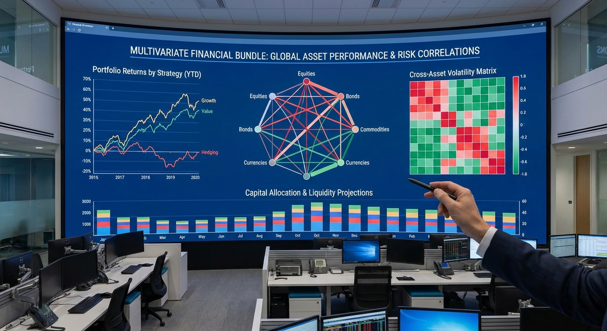

Topic 6
Multivariate Financial Time Series Bundle
Medium
+1 Bonus Point

Topic 6 – Multivariate Financial Time Series Bundle
Level: Medium Goal: Model several assets jointly (correlations, VAR, multivariate forecasting).Dataset
- Source: Financial Time Series Datasets – Kaggle
- Link: https://www.kaggle.com/datasets/praxitelisk/financial-time-series-datasets
Download Instructions
- Open the dataset page above.
- Click "Download".
- Extract to
data/financial/. - Choose some CSVs (indices, FX, commodities).
Data Loading
import pandas as pd
import os
print(os.listdir("data/financial"))
sp500 = pd.read_csv("data/financial/sp500.csv") # adjust
oil = pd.read_csv("data/financial/oil.csv") # adjust
for df_ in (sp500, oil):
df_["Date"] = pd.to_datetime(df_["Date"])
df_.set_index("Date", inplace=True)
df_.sort_index(inplace=True)
merged = sp500[["Close"]].rename(columns={"Close": "SP500"}).join(
oil[["Close"]].rename(columns={"Close": "OIL"}), how="inner"
)Implementation Steps
1. Data Exploration
- Load multiple financial time series (e.g., stock indices, commodities, FX)
- Select 3-5 series for multivariate analysis
- Align time indices (handle different frequencies)
- Inspect data quality and missing values
2. Exploratory Data Analysis (EDA)
- Plot each series individually
- Calculate pairwise correlations
- Visualize correlation matrix (heatmap)
- Analyze co-movements and relationships
- Perform time series decomposition for each series
3. Data Preprocessing
- Align series to common time index
- Handle missing values (forward fill, interpolation)
- Calculate returns for each asset
- Test each series for stationarity
- Apply transformations (differencing, log) as needed
4. Correlation Analysis
- Calculate correlation matrix of returns
- Analyze time-varying correlations (rolling correlations)
- Identify periods of high/low correlation
- Visualize correlation dynamics over time
5. Model Building
- Univariate Models (baseline):
- ARIMA for each series individually
- Multivariate Models:
- VAR (Vector Autoregression):
- Select optimal lag order (AIC/BIC)
- Estimate VAR model
- Granger causality tests
- VECM (Vector Error Correction Model):
- Test for cointegration (Johansen test)
- If cointegrated, estimate VECM
- Dynamic Correlation Models (advanced):
- DCC-GARCH for time-varying correlations
6. Model Evaluation
- Split data temporally
- Generate multivariate forecasts
- Calculate forecast accuracy for each series
- Compare univariate vs multivariate approaches
- Visualize joint forecasts
7. Portfolio Analysis (Optional)
- Construct portfolio weights
- Analyze portfolio returns and volatility
- Compare with individual asset performance
Expected Deliverables
- EDA Report:
- Individual series plots
- Correlation analysis and heatmaps
- Time-varying correlation plots
- Stationarity test results
- Model Results:
- VAR model parameters
- Cointegration test results (if applicable)
- Forecast accuracy comparison
- Multivariate forecast plots
- Granger causality results
- Code:
- Complete Python notebook
- Functions for multivariate analysis
- Visualization utilities
Tips
- Select related assets (e.g., stock indices, commodities) for meaningful relationships
- Align data frequencies (daily, weekly) before merging
- Returns are typically more stationary than prices
- VAR models require stationary series
- Test for cointegration if analyzing prices directly
- Use appropriate lag selection criteria (AIC, BIC, HQIC)
- Multivariate models can capture spillover effects between assets
- Consider economic/financial relationships when interpreting results
Getting Started
This topic includes:
- README.md - Detailed implementation guide (this page)
- starter.ipynb - Jupyter notebook with installation and data loading code
- Featured image - Visual representation of the topic
Navigate to the Topic/6.Multivariate_Financial/ directory to access all resources.